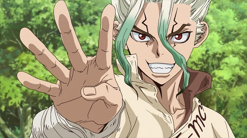
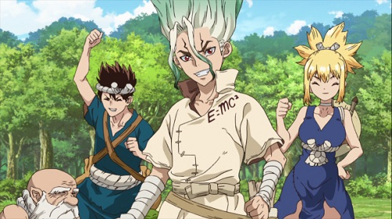

Dr. Stone
Senku y Taiju son dos estudiantes de secundaria en Japón. El día que Taiju decide declararse al amor de su vida, Yuzuriha, una gran resplandor cubre el cielo y de alguna manera hace que toda la humanidad se petrifique. Más de 3700 años después Taiju finalmente despierta de su encierro, y descubre que la sociedad humana ha sido aniquilada. Mientras caminaba encuentra a su amigo Senku, quien lo pone al tanto de la situación.
Me permito mencionar que Senku se caracterizaba por ser muy inteligente al contrario de Taiju que contaba con una excelente habilidad física, ambos deberán trabajar juntos para reconstruir la civilización y liberar a las personas, y entre ellas, a Yuzuriha.
Personalmente se me hace una historia de ciencia-ficción bastante interesante de ver, la historia básicamente se centra en volver a la sociedad que dejaron atrás hace 3700 años y descubrir la causa de la petrificación.